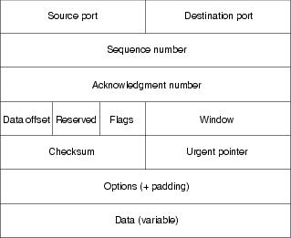
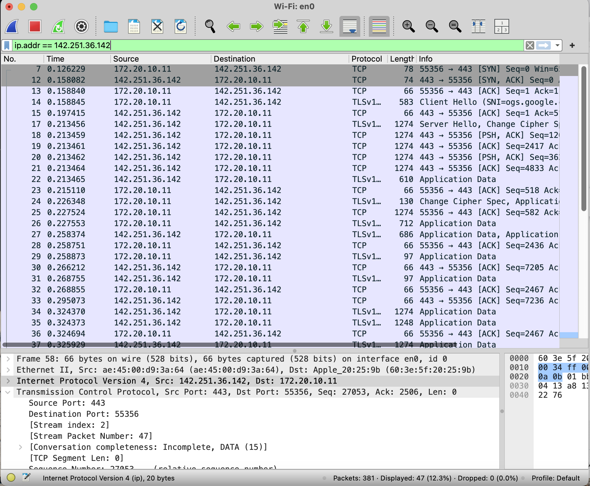
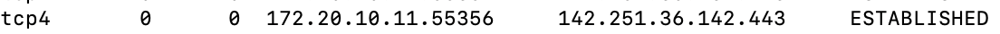
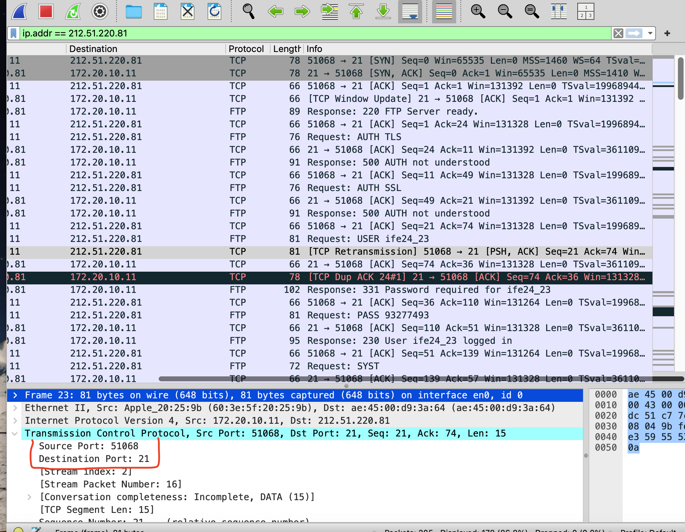
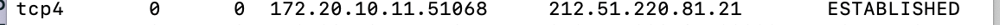
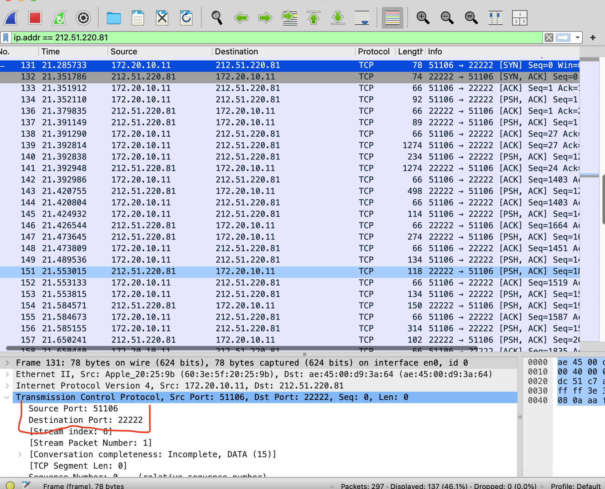
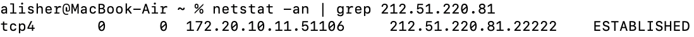
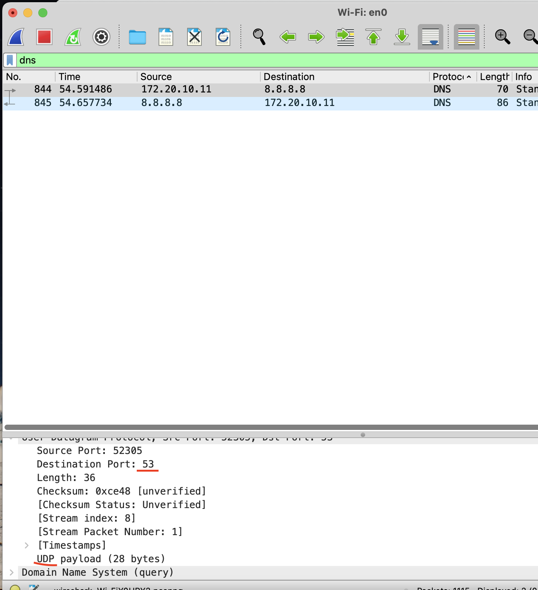

Networking: Theoretical and Practical Tasks
Theoretical Part
TCP Protocol
The Transmission Control Protocol (TCP) is one of the main protocols of the Internet protocol suite. It originated in the initial network implementation in which it complemented the Internet Protocol (IP). Therefore, the entire suite is commonly referred to as TCP/IP. TCP provides reliable, ordered, and error-checked delivery of a stream of octets (bytes) between applications running on hosts communicating via an IP network.
UDP Protocol
UDP (User Datagram Protocol) is a data transmission protocol used to send messages between computers over a network. Unlike TCP, UDP does not establish a connection between the sender and receiver before transmitting data. It simply sends packets (datagrams) without any prior negotiation, making it simpler but also less reliable. UDP is faster than TCP because it doesn’t require connection establishment or delivery/order checks. This makes it ideal for applications where speed is important, and loss of some data is acceptable. Examples: video and audio streaming, online gaming, VoIP (Voice over IP).
TCP Protocol Parameters
TCP parameters include sequence number, acknowledgment number, data offset, reserved, control bits (flags), window size, checksum, urgent pointer, options, and padding. These parameters help in establishing a reliable connection and ensuring data integrity during transmission.
- Source Port Field (16 bits): The Source Port field denotes the port number of the sending device.
- Destination Port Field (16 bits): The Destination Port field signifies the port number on the receiving device.
- Sequence Number Field (32 bits): This field indicates the total number of bytes sent to the receiver. It is instrumental for the receiver to reconstruct data correctly.
- Acknowledgment Number Field (32 bits): The Acknowledgment Number field contains the sequence number that the receiving device expects to receive next.
- Data Offset Field (4 bits): Indicates the starting point of the TCP data payload.
- Reserved Field (3 bits): Reserved for future use.
- Flags Field (9 bits): Includes control flags such as SYN, ACK, FIN.
- Window Field (16 bits): Governs the flow control by specifying the window size.
- Checksum Field (16 bits): Provides error-checking for the header and data.
- Urgent Pointer Field (16 bits): Specifies the location of urgent data.
- Options Field (0-320 bits): Accommodates various optional parameters and settings.
- Data Field: Contains the actual payload or data being transmitted.
UDP Protocol Parameters
UDP has fewer protocol parameters than TCP, including source port, destination port, length, and checksum. These parameters help in identifying the source and destination of the data and ensuring data integrity to some extent.

- Source Port: Identifies the sender's port number.
- Destination Port: Specifies the recipient's port number.
- Length: Total length of the UDP datagram.
- Checksum: Provides some error-checking for the header and data.
TCP Connection
A TCP connection is established through a process called a three-way handshake. This process involves the exchange of SYN and ACK packets between the client and server to establish a connection before data transmission can occur.
Three-Way Handshake
- SYN: Client sends a synchronization request.
- SYN-ACK: Server acknowledges the request and sends its own synchronization.
- ACK: Client acknowledges the server's synchronization.
Connection Establishment
The three-way handshake ensures both parties are ready for communication and establishes parameters for data transfer.
Connection Release
Connection release in TCP is done through a process called the four-way handshake, which involves the exchange of FIN and ACK packets between the client and server to gracefully close the connection.
- FIN (Finish): Initiator signals the intent to close the connection.
- ACK (Acknowledge): The receiver acknowledges the request to close the connection.
- FIN (Finish) The receiver signals its own intent to close the connection.
- ACK (Acknowledge): The initiator acknowledges the receiver's request, and the connection is fully closed.
Ports
Ports are numerical identifiers used by protocols to direct data to the correct application.
Port numbers are 16-bit values, which means they range from 0 to 65,535. They are divided into three categories:
- Well-Known Ports (0-1023): These are reserved for common protocols and services (e.g., HTTP uses port 80, FTP uses port 21)
- Registered Ports (1024-49151): These are used by user applications and services that are not standardized but are registered for specific purposes (e.g., MySQL uses port 3306).
- Dynamic or Private Ports (49152-65535): These are used for ephemeral connections or temporary ports, typically assigned by the operating system when a client application requests a connection (e.g., a temporary port for a web browser to connect to a server).
Common ports include:
- 80 (HTTP)
- 443 (HTTPS)
- 21 (FTP)
- 22 (SSH)
- 53 (DNS)
Practical Part
2.1.1 Accessing www.google.com
- Open a browser and access www.google.com.
- Use
netstatto identify the local and remote port numbers. - Run Wireshark to capture packets and verify port usage.
- Close the browser and check the local port status using
netstat.


2.1.2 FTP File Transfer
- Use an FTP client to upload a file to studife.it.p.lodz.pl.
- Identify the ports used for data transmission using
netstatand Wireshark. - Close the FTP connection and check the local port status.  
2.1.3 SFTP/SCP File Transfer
- Use an SFTP/SCP client to upload a file to studife.it.p.lodz.pl.
- Identify the ports used for data transmission using
netstatand Wireshark. - Close the connection and check the local port status.  
2.1.4 DNS Protocol
- Run Wireshark and capture DNS-related traffic.
- Analyze the transport layer protocol and port used by DNS (typically UDP on port 53). 